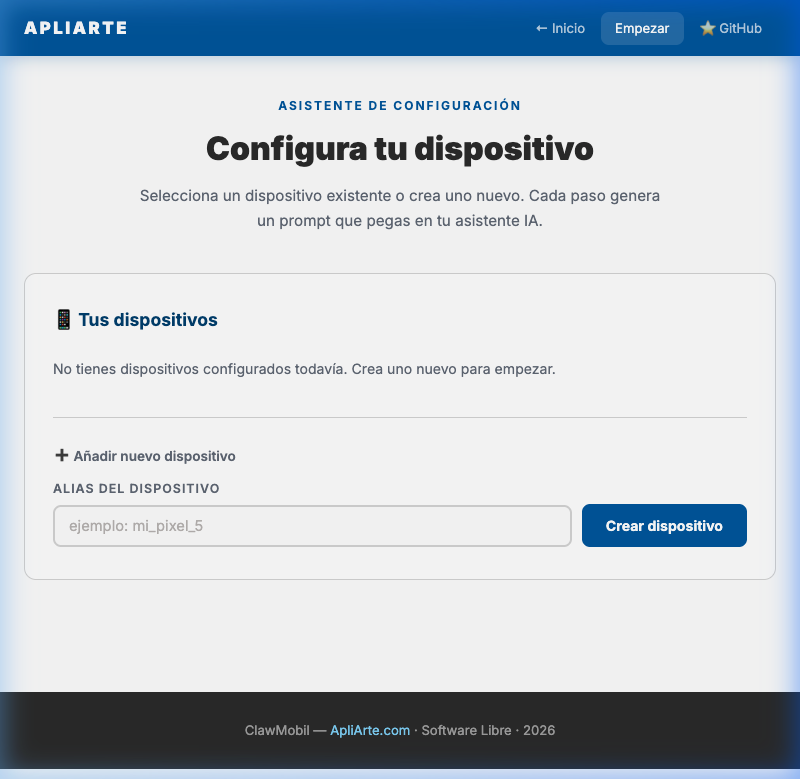
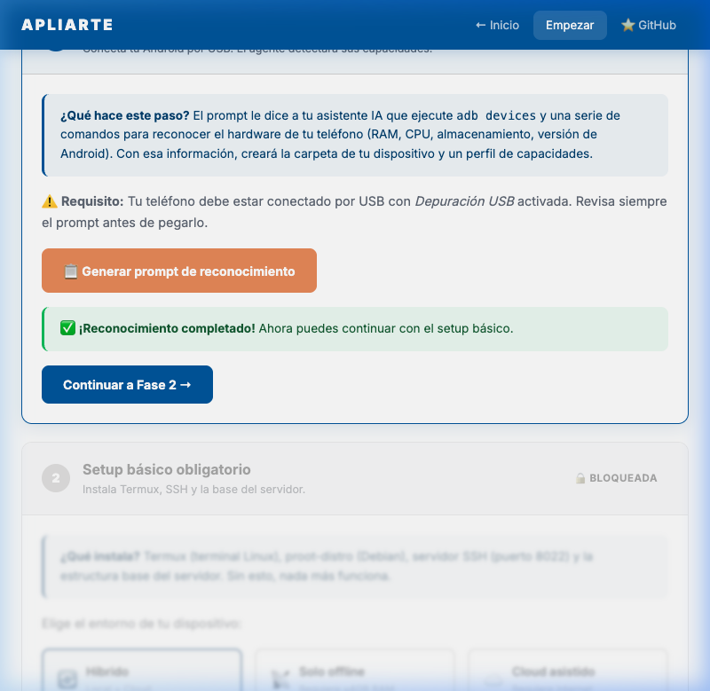
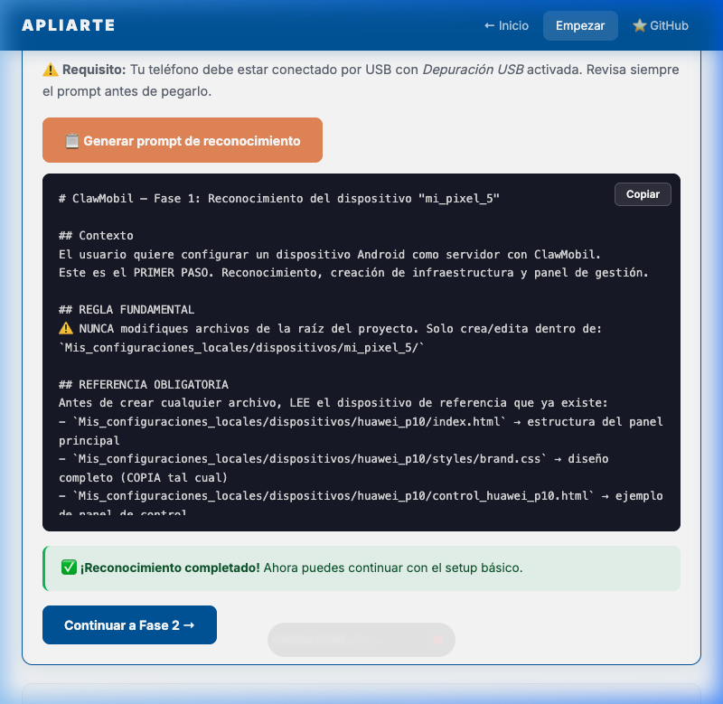
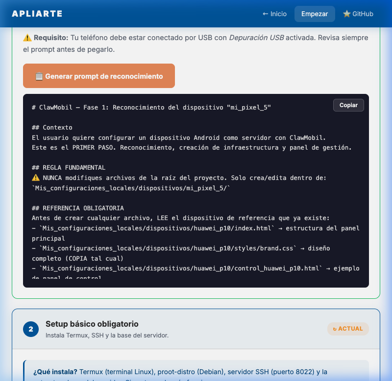

ClawMobil te guía paso a paso para reciclar cualquier Android viejo y convertirlo en un asistente inteligente autónomo. Sin experiencia técnica necesaria.
No necesitas ser programador. Sigue estos pasos y en 15 minutos tendrás tu móvil reciclado funcionando como servidor.
Abre la carpeta ClawMobil en VS Code, Cursor, o tu editor con IA favorito.
En la raíz del proyecto encontrarás el archivo empezar.html. Ábrelo en tu navegador (doble clic o arrástralo). Este wizard te guía para crear tu primer dispositivo.
Conecta el dispositivo por USB, activa Depuración USB, y verifica con
adb devices.
Copia el prompt generado por el wizard y pégalo en el chat de tu asistente IDE. Él hace el resto.
Tu móvil antiguo ahora ejecuta OpenClaw como servidor de inteligencia artificial autónomo.
Un ecosistema completo para dar nueva vida a dispositivos Android que ya no usas.
Tu móvil ejecuta un gateway OpenClaw que responde preguntas, genera texto y procesa comandos de forma inteligente.
Con modelos locales (Ollama, llama.cpp), el dispositivo funciona como servidor de IA completamente offline.
Recibe y responde mensajes de Telegram automáticamente. Tu asistente personal siempre disponible.
Un wizard HTML interactivo genera el prompt para que tu asistente IDE configure todo automáticamente.
Interfaz nativa opcional para controlar y supervisar los servicios del dispositivo desde la pantalla del teléfono.
Dale nueva vida a un móvil que iba al cajón. Ecológico, gratuito y con una comunidad detrás.
El asistente empezar.html te guía paso a paso. Solo copias cada
prompt en tu IA.

Escribe un alias para tu móvil y pulsa "Crear". Se guarda en tu navegador.

Conecta tu Android por USB. El wizard explica qué hará el prompt: detectar hardware, crear carpeta y panel completo.

Pulsa "Copiar" y pégalo en tu asistente IA. Él ejecuta todo: ADB, carpeta, panel con 6 secciones.

Cada fase se desbloquea al completar la anterior. Sin saltos, sin errores.
Las preguntas más comunes sobre ClawMobil.
Cualquier Android con al menos 3 GB de RAM y Android 7+. Probado en Samsung Galaxy A3 2017, Huawei P10 y Yestel Note Pro. Cuanto más nuevo, mejor rendimiento.
No. El wizard de empezar.html genera un prompt que puedes pegar en cualquier
asistente con IA (VS Code con Copilot, Cursor, Gemini CLI…). El asistente hace el trabajo
técnico por ti.
NO. Usa un teléfono viejo que ya no necesites. Haz restablecimiento de fábrica y no inicies sesión con tu cuenta personal de Google.
Solo para la instalación inicial. Una vez configurado, puedes operar en modo offline con modelos locales de IA.
Sí, 100% Open Source. Sin costes ocultos, sin suscripciones. Solo tu móvil viejo y un cable USB.